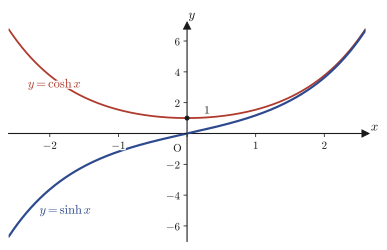
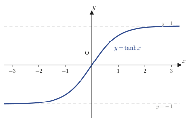

Chapter 2Continuity of Functions, the Mean Value Theorem, and Hyperbolic Functions
In Chapter 1, we used the $\varepsilon$-$N$ argument and the $\varepsilon$-$\delta$ argument to translate the intuition of “getting arbitrarily close” into logical formulas, and with those tools we defined differentiation (the derivative). However, for the operation of differentiation to have real meaning, we must first confirm what comes before it: the “way a function is connected,” that is, its continuity. This is because, for a function whose graph is broken partway or has jumps, even the very idea of the slope of a tangent line becomes questionable.
In this chapter we first define continuity precisely by means of the $\varepsilon$-$\delta$ argument and, as a preliminary step, prove the fundamental limits of the trigonometric functions ($\lim_{x\to0}\sin x/x=1$ and so on). Next we prove one of the most important theorems of calculus, the mean value theorem (MVT)—“the average slope of a smooth curve is always equal to the instantaneous slope at some point”—starting from its special case, Rolle's theorem. Using Cauchy's mean value theorem, a further extension of the mean value theorem to two variables, we obtain l'Hôpital's rule, which computes limits of type $\frac00$ or type $\frac{\pm\infty}{\pm\infty}$ mechanically. Finally, taking the exponential function $e^x$ as our raw material, we introduce the hyperbolic functions $\sinh x,\cosh x,\tanh x$, which have properties very similar to those of the trigonometric functions, and work through their addition formulas, their mutual relations, and their inverse functions. The hyperbolic functions are important tools that appear repeatedly in later chapters as well (the catenary, special relativity, the Fourier transform, and so on).
- Proving $\lim_{x\to0}\dfrac{\sin x}{x}=1$, $\lim_{x\to0}\dfrac{\tan x}{x}=1$, and $\lim_{x\to0}\dfrac{1-\cos x}{x^2}=\dfrac12$ by comparing the area of a sector of the unit circle with the areas of triangles
- Deriving, from Euler's formula $e^{i\theta}=\cos\theta+i\sin\theta$ and de Moivre's theorem, expressions for $\sin\theta,\cos\theta,\tan\theta$ in terms of the complex exponential function alone
- The definition of continuity of a function by the $\varepsilon$-$\delta$ argument: $\forall\varepsilon \gt 0,\exists\delta \gt 0\ \text{s.t.}\ 0 \lt |x-a| \lt \delta\Rightarrow|f(x)-f(a)| \lt \varepsilon$
- A complete proof, by case analysis, of Rolle's theorem (the existence of $c$ for which $f(a)=f(b)\Rightarrow f'(c)=0$)
- The mean value theorem and its proof (the technique of forming the difference function $F(x)=f(x)-(\text{equation of the chord})$ and reducing the problem to Rolle's theorem)
- Cauchy's mean value theorem (a generalization using the parametric equations $X=g(x),Y=f(x)$) and its proof
- L'Hôpital's rule ((I) the $\frac00$ form, (II) the $\frac{\pm\infty}{\pm\infty}$ form) and its proof (an application of Cauchy's mean value theorem and the $\varepsilon$-$\delta$ argument)
- The addition formulas for the hyperbolic functions $\sinh x=\dfrac{e^x-e^{-x}}2,\ \cosh x=\dfrac{e^x+e^{-x}}2,\ \tanh x=\dfrac{\sinh x}{\cosh x}$, and their properties, beginning with $\cosh^2x-\sinh^2x=1$
- The reason for the “difference in ranges” between the trigonometric functions and the hyperbolic functions, which becomes visible when we compare the signs in their Maclaurin expansions
- Deriving the expressions for the inverse hyperbolic functions $\sinh^{-1}x,\cosh^{-1}x,\tanh^{-1}x$ in terms of logarithmic functions
Source notes: Yasuhide Mochizuki, Mathematics Notes: Calculus, pp. 11–22.
2.1 Fundamental Limits of Trigonometric Functions and Representations in the Style of Euler's Formula
In Chapter 1 we learned the definition of the derivative $\displaystyle f'(x)=\lim_{h\to0}\frac{f(x+h)-f(x)}{h}$, so we naturally want to find the derivative of $f(x)=\sin x$ right away. To do so, however, we first have to know the limit
$$ \lim_{x\to0}\frac{\sin x}{x} $$(we use this limit in Chapter 3 when we actually prove that $\dfrac{d}{dx}\sin x=\cos x$). As $x\to0$ we have $\sin x\to0$ and $x\to0$, so this is an “indeterminate form” of type $\frac00$: if we simply substitute into the numerator and denominator, we get $0/0$, and the value is not determined. The goal of this section is to pin down this limit.
2.1.1 $\displaystyle\lim_{x\to0}\frac{\sin x}{x}=1$ — Comparing the areas of the sector and the triangles
Let $x$ be a sufficiently small positive angle measured in radians (the method of measuring angles by the length of a circular arc: in a circle of radius $1$, the central angle that cuts off an arc of length exactly $x$ is called “$x$ radians”). Let $O$ be the center of the circle of radius $1$ (the unit circle), take the point $B=(1,0)$ on the circle, and let $P$ be the point on the circle obtained by rotating that point through the angle $x$ about $O$ (that is, $P=(\cos x,\sin x)$). Furthermore, let $T$ be the point where the extension of the line $OP$ meets the line $x=1$ (the perpendicular through $B$). Then, in the right triangle $OBT$, we have $\tan x=\dfrac{BT}{OB}=\dfrac{BT}{1}$, so $BT=\tan x$.
As shown in Figure 2.1, the three figures (i) triangle $OBP$, (ii) sector $OBP$ (the part bounded by the arc $BP$ and the radii $OB,OP$), and (iii) triangle $OBT$ all have the same side $OB$ as their base, and each lies between the two lines emanating from $O$. The arc $BP$ bulges outward beyond the chord $BP$ and lies on the inner side of the line $BT$, so the sector, which is bounded by the arc, contains the small triangle bounded by the chord and is contained in the large triangle bounded by the line $BT$. Therefore the inclusion relation triangle $OBP\ \subset\ $ sector $OBP\ \subset\ $ triangle $OBT$ holds (the symbol “$\subset$” means “is contained in”; that is, the set of points forming the figure on the left is a subset of the set of points forming the figure on the right), and the same ordering holds for the areas.
Proof: $\displaystyle\lim_{x\to0}\frac{\sin x}{x}=1$ (the case $0 \lt x \lt \frac\pi2$)
Computing the areas of triangle $OBP$, sector $OBP$, and triangle $OBT$ by the formulas “$\frac12\times$ base $\times$ height” and “$\frac12\times$ radius$^2\times$ central angle,” respectively, we get
$$ \underbrace{\frac12\cdot1\cdot1\cdot\sin x}_{\text{triangle }OBP} \ \le\ \underbrace{\frac12\cdot1\cdot1\cdot x}_{\text{sector }OBP} \ \le\ \underbrace{\frac12\cdot1\cdot1\cdot\tan x}_{\text{triangle }OBT} $$(The area of triangle $OBP$ is $\frac12\cdot1\cdot\sin x$, because its base is $OB=1$ and its height is the $y$-coordinate $\sin x$ of $P$. The area of the sector is $\frac12 x$, obtained by substituting $r=1,\theta=x$ into the area formula $\frac12 r^2\theta$ for a sector with central angle $x$ and radius $1$. The area of triangle $OBT$ is $\frac12\tan x$, because its base is $OB=1$ and its height is $BT=\tan x$.) Multiplying both sides by $2$, we obtain
$$ \sin x \le x \le \tan x $$We split this into the two inequalities
$$ \begin{cases}\sin x\le x&\cdots① \\ x\le\tan x&\cdots②\end{cases} $$and treat them separately. Dividing both sides of ① by $x$ (since $x \gt 0$ for $0 \lt x \lt \frac\pi2$), we get
$$ \frac{\sin x}{x}\le1 $$For ②, substituting $\tan x=\dfrac{\sin x}{\cos x}$ gives $x\le\dfrac{\sin x}{\cos x}$, so multiplying both sides by $\cos x$ (since $\cos x \gt 0$ for $0 \lt x \lt \frac\pi2$), we get
$$ x\cos x\le\sin x\quad\text{that is,}\quad\cos x\le\frac{\sin x}{x} $$Combining the two inequalities $\dfrac{\sin x}{x}\le1$ and $\cos x\le\dfrac{\sin x}{x}$ obtained from ① and ②, we get
$$ \cos x \le \frac{\sin x}{x} \le 1 \qquad\cdots③ $$This is an inequality that sandwiches $\dfrac{\sin x}{x}$ between two quantities. Taking $\displaystyle\lim_{x\to0}$ of each side of ③, we obtain
$$ \lim_{x\to0}\cos x \ \le\ \lim_{x\to0}\frac{\sin x}{x} \ \le\ \lim_{x\to0}1 $$Since $\cos x$ is a function continuous at $x=0$, we have $\displaystyle\lim_{x\to0}\cos x=\cos0=1$ (the definition of continuity is stated precisely in Section 2.2; here we use it as a fact already learned in high school). Thus the leftmost and rightmost sides are both $1$, so by the squeeze theorem proved in Chapter 1, Section 1.3 (the theorem stating that a quantity squeezed from both sides by quantities that approach the same value converges to that value), we obtain
$$ \therefore\ \lim_{x\to0}\frac{\sin x}{x} = 1 $$Thus the stated limit holds. (For the case $0 \gt x \gt -\frac\pi2$, the same result follows from $\sin(-x)/(-x)=\sin x/x$, so the limit holds as a two-sided limit.)
Intuition: A formula that holds precisely because of radians
The formula $\displaystyle\lim_{x\to0}\frac{\sin x}{x}=1$ holds precisely because angles are measured in radians. If angles were measured in degrees (a way of measuring angles with $360°$ as one full turn), the area formula for a sector would not take the simple form $\frac12 r^2\theta$ (replacing the radian measure $\theta$ by the degree measure $\theta°$ introduces an extra factor, since the radian measure is $\theta=\frac{\pi}{180}\theta°$), and the value of the limit would be $\dfrac{\pi}{180}$ rather than $1$. By measuring angles by the length of the arc, radian measure eliminates such conversion factors and makes it possible for the differentiation formula for trigonometric functions (Chapter 3) to take the simple form $\cos x$; it is an extremely natural unit of angle.
2.1.2 $\displaystyle\lim_{x\to0}\frac{\tan x}{x}=1$
This limit is obtained simply by combining the relation $\tan x=\dfrac{\sin x}{\cos x}$ with the limit $\lim_{x\to0}\frac{\sin x}{x}=1$ proved in Section 2.1.1.
Proof: $\displaystyle\lim_{x\to0}\frac{\tan x}{x}=1$
Since $\tan x=\dfrac{\sin x}{\cos x}$,
$$ \lim_{x\to0}\frac{\tan x}{x} = \lim_{x\to0}\frac{\dfrac{\sin x}{\cos x}}{x} = \lim_{x\to0}\underbrace{\frac{\sin x}{x}}_{\to\,1}\cdot\frac{1}{\cos x} $$(We separated $\dfrac{\sin x}{\cos x\cdot x}=\dfrac{\sin x}{x}\cdot\dfrac1{\cos x}$ into a product.) Since $\cos x$ is continuous at $x=0$ and $\cos0=1\neq0$, we have $\displaystyle\lim_{x\to0}\frac{1}{\cos x}=\frac{1}{\lim_{x\to0}\cos x}=\frac11=1$. Therefore, by the product rule for limits (if each limit exists, the limit of a product equals the product of the limits),
$$ \lim_{x\to0}\frac{\tan x}{x} = 1\cdot1 = 1 \qquad\therefore\ \lim_{x\to0}\frac{\tan x}{x}=1 $$2.1.3 $\displaystyle\lim_{x\to0}\frac{1-\cos x}{x^2}=\frac12$
This limit is also an indeterminate form of type $\frac00$, but we use the classical trick of multiplying and dividing the numerator “$1-\cos x$” by $1+\cos x$ (not rationalization, but “$\cos$-ization”) to change it into a form involving $\sin^2x$, and thus reduce it to the result of Section 2.1.1.
Proof: $\displaystyle\lim_{x\to0}\frac{1-\cos x}{x^2}=\frac12$
We multiply the numerator and denominator by $1+\cos x$ (this is an equivalent transformation, because $1+\cos x\neq0$ is guaranteed near $x=0$).
$$ \lim_{x\to0}\frac{1-\cos x}{x^2} = \lim_{x\to0}\frac{(1-\cos x)(1+\cos x)}{x^2(1+\cos x)} = \lim_{x\to0}\frac{1-\cos^2x}{x^2(1+\cos x)} $$By the basic trigonometric identity $\sin^2x+\cos^2x=1$ (already learned in high school), $1-\cos^2x=\sin^2x$, so
$$ = \lim_{x\to0}\frac{\sin^2x}{x^2(1+\cos x)} = \lim_{x\to0}\left(\frac{\sin x}{x}\right)^2\cdot\frac{1}{1+\cos x} $$(We separated $\dfrac{\sin^2x}{x^2}=\left(\dfrac{\sin x}{x}\right)^2$.) Using the result $\lim_{x\to0}\frac{\sin x}{x}=1$ of Section 2.1.1 and the continuity of $\cos x$, $\lim_{x\to0}\cos x=1$, we get
$$ = 1^2\cdot\frac{1}{1+1} = 1\cdot\frac12 = \frac12 \qquad\therefore\ \lim_{x\to0}\frac{1-\cos x}{x^2}=\frac12 $$Example 2.1: Finding $\displaystyle\lim_{x\to0}\frac{\sin3x}{x}$
Find $\displaystyle\lim_{x\to0}\frac{\sin3x}{x}$.
Solution. Let $u=3x$. Then $u\to0$ as $x\to0$, and $x=\dfrac{u}{3}$, so
$$ \lim_{x\to0}\frac{\sin3x}{x} = \lim_{u\to0}\frac{\sin u}{u/3} = \lim_{u\to0}3\cdot\frac{\sin u}{u} = 3\cdot1 = 3 $$(We used the result $\lim_{u\to0}\frac{\sin u}{u}=1$ of Section 2.1.1.) Hence $\displaystyle\lim_{x\to0}\frac{\sin3x}{x}=3$. More generally, the same argument shows that $\displaystyle\lim_{x\to0}\frac{\sin kx}{x}=k$ ($k$ is a constant other than $0$).
Example 2.2: Finding $\displaystyle\lim_{x\to0}\frac{1-\cos2x}{4x^2}$
Find $\displaystyle\lim_{x\to0}\frac{1-\cos2x}{4x^2}$.
Solution. Let $u=2x$. Then $u\to0$ as $x\to0$, and $4x^2=u^2$, so
$$ \lim_{x\to0}\frac{1-\cos2x}{4x^2} = \lim_{u\to0}\frac{1-\cos u}{u^2} = \frac12 $$(We used the result of Section 2.1.3 as it stands.) Hence $\displaystyle\lim_{x\to0}\frac{1-\cos2x}{4x^2}=\frac12$.
2.1.4 $\sin\theta,\cos\theta,\tan\theta$ as seen from Euler's formula
Math Note: Euler's formula and de Moivre's theorem (review of material covered in high school)
As you learned in the complex plane unit of high school Mathematics C, for a complex number $z=r(\cos\theta+i\sin\theta)$ ($r$ is the absolute value and $\theta$ is the argument), Euler's formula holds:
$$ e^{i\theta} = \cos\theta + i\sin\theta $$Here $i=\sqrt{-1}$ is the imaginary unit. This formula is the relation that appears when the exponential function $e^{z}$ is extended to complex numbers $z$, and a complete proof is given by comparing the Maclaurin expansions (power series expansions) of $e^x,\sin x,\cos x$—we do this in Chapter 4, Section 4.2.3. Here we accept it as a fact already learned in high school and use it. Also, from the case $n=-1$ of de Moivre's theorem $(\cos\theta+i\sin\theta)^n=\cos n\theta+i\sin n\theta$, that is, from the formula for the reciprocal of a complex number, we obtain
$$ e^{-i\theta} = \cos(-\theta)+i\sin(-\theta) = \cos\theta - i\sin\theta $$as well (we used the facts that $\cos$ is an even function and $\sin$ is an odd function). Combining these two equations, we get expressions for $\sin\theta,\cos\theta$ in terms of the complex exponential functions $e^{\pm i\theta}$ alone. This will be very useful later when we compare them with the hyperbolic functions $\sinh x=\frac{e^x-e^{-x}}2,\cosh x=\frac{e^x+e^{-x}}2$ (Section 2.5)—the hyperbolic functions are, so to speak, “$\sin,\cos$ obtained when $i\theta$ is replaced by a real number $x$.”
Derivation: $\displaystyle\sin\theta=\frac{e^{i\theta}-e^{-i\theta}}{2i}$
By Euler's formula, $e^{i\theta}=\cos\theta+i\sin\theta\ \cdots①$. Also, by de Moivre's theorem, $e^{-i\theta}=\cos\theta-i\sin\theta\ \cdots②$. Computing ①$-$②, the $\cos\theta$ terms cancel each other, and we obtain
$$ e^{i\theta}-e^{-i\theta} = 2i\sin\theta $$Dividing both sides by $2i$ (this is allowed because $i\neq0$), we get
$$ \frac{e^{i\theta}-e^{-i\theta}}{2i} = \sin\theta \qquad\therefore\ \sin\theta = \frac{e^{i\theta}-e^{-i\theta}}{2i} $$Derivation: $\displaystyle\cos\theta=\frac{e^{i\theta}+e^{-i\theta}}{2}$
We use ① and ② again. This time, computing ①$+$②, the $i\sin\theta$ terms cancel each other, and we obtain
$$ e^{i\theta}+e^{-i\theta} = 2\cos\theta $$Dividing both sides by $2$, we get
$$ \frac{e^{i\theta}+e^{-i\theta}}{2} = \cos\theta \qquad\therefore\ \cos\theta = \frac{e^{i\theta}+e^{-i\theta}}{2} $$Derivation: $\displaystyle\tan\theta=\frac{e^{i\theta}-e^{-i\theta}}{i(e^{i\theta}+e^{-i\theta})}$
Substituting the two preceding results into $\tan\theta=\dfrac{\sin\theta}{\cos\theta}$, we get
$$ \tan\theta = \frac{\dfrac{e^{i\theta}-e^{-i\theta}}{2i}}{\dfrac{e^{i\theta}+e^{-i\theta}}{2}} $$This is a complex fraction (a fraction whose numerator and denominator are themselves fractions). Multiplying the numerator and the denominator by $2i$ and simplifying (the numerator becomes $\frac{e^{i\theta}-e^{-i\theta}}{2i}\times2i=e^{i\theta}-e^{-i\theta}$, and the denominator becomes $\frac{e^{i\theta}+e^{-i\theta}}{2}\times2i=i(e^{i\theta}+e^{-i\theta})$), we get
$$ = \frac{e^{i\theta}-e^{-i\theta}}{i(e^{i\theta}+e^{-i\theta})} \qquad\therefore\ \tan\theta = \frac{e^{i\theta}-e^{-i\theta}}{i(e^{i\theta}+e^{-i\theta})} $$2.2 Continuity of Functions
A “continuous function” is, intuitively, “a function whose graph can be drawn in a single stroke, a function that does not break or jump along the way.” But now that we have learned the $\varepsilon$-$\delta$ argument in Chapter 1, there is no need to leave this intuition vague. Let us recall the definition of the limit of a function by the $\varepsilon$-$\delta$ argument (Chapter 1, Section 1.2):
$$ \lim_{x\to a}f(x)=P \quad\overset{\text{definition}}{\Longleftrightarrow}\quad \forall\varepsilon \gt 0,\ \exists\delta \gt 0\ \ \text{s.t.}\ \ 0 \lt |x-a| \lt \delta\Rightarrow|f(x)-P| \lt \varepsilon $$(A reminder of the notation: “$\forall$” means “for all,” “$\exists$” means “there exists,” and “s.t.” is an abbreviation of “such that” (that is, “so as to satisfy …”).) We define continuity to be the situation in which this limit value $P$ coincides exactly with the value of the function itself, $f(a)$.
Definition 2.1: Continuity of a function (by the $\varepsilon$-$\delta$ argument)
Suppose that a function $f(x)$ is defined near $x=a$. If the following condition
$$ \forall\varepsilon \gt 0,\ \exists\delta \gt 0\ \ \text{s.t.}\ \ 0 \lt |x-a| \lt \delta\ \Rightarrow\ |f(x)-f(a)| \lt \varepsilon $$holds, we say that $f(x)$ is continuous at $x=a$. In this case,
$$ \lim_{x\to a}f(x) = f(a) $$holds. If $f(x)$ is continuous at every point of an interval, we say that $f(x)$ is continuous on that interval, or simply that it is a continuous function.
Intuition: What is the difference from the definition of a limit?
The definition of continuity looks almost the same as the definition of a limit in form. There is really only one difference: the definition of the limit excluded $x=a$ itself by the condition “$0 \lt |x-a| \lt \delta$,” whereas the definition of continuity uses $f(a)$ (the actual value of the function at $x=a$) in place of the limit value. In other words, continuity demands two conditions at once: not only that “the limit as $x\to a$ exists,” but also that “this limit coincides exactly with the height of the graph at $x=a$, namely $f(a)$.” For example, consider the function defined by $f(x)=\dfrac{\sin x}{x}$ ($x\neq0$) and $f(0)=0$. The limit $\displaystyle\lim_{x\to0}f(x)=1$ (proved in Section 2.1.1) exists, but since $f(0)=0\neq1$, this function is not continuous at $x=0$ (picture the graph with only the point at $x=0$ displaced from its proper position, leaving a “hole”). If we redefine $f(0)$ to be $1$, then $f(x)$ becomes continuous at $x=0$ as well.
Caution: Do not reverse the order of $\forall,\exists$
As in the $\varepsilon$-$N$ and $\varepsilon$-$\delta$ arguments of Chapter 1, here too the order “$\forall\varepsilon \gt 0$ first, $\exists\delta \gt 0$ afterward” is essential. The correct reading is: “No matter how small a tolerance $\varepsilon$ is specified in advance, we can find a suitable $\delta$ accordingly (which may depend on $\varepsilon$).” If we fixed $\delta$ first, we would be unable to handle an $\varepsilon$ that is too small, so it would not make sense as a definition.
Example 2.3: Showing that $f(x)=3x^2-1$ is continuous at $x=2$
Show that $f(x)=3x^2-1$ is continuous at $x=2$, following the $\varepsilon$-$\delta$ argument (Definition 2.1).
Solution. We have $f(2)=3\cdot4-1=11$. It suffices to show that for any $\varepsilon \gt 0$ there exists a $\delta \gt 0$ satisfying $|f(x)-f(2)| \lt \varepsilon$. First, we estimate $|f(x)-f(2)|$ by factoring.
$$ f(x)-f(2) = (3x^2-1)-11 = 3x^2-12 = 3(x-2)(x+2) $$Therefore $|f(x)-f(2)|=3|x-2|\,|x+2|$. Here we want to bound the factor $|x+2|$ from above in terms of $|x-2|$. To do so, we first agree to work within the range $\delta\le1$ (we will build this restriction into the final choice of $\delta$). If $|x-2| \lt 1$, then $1 \lt x \lt 3$, so
$$ |x+2| = x+2 \lt 3+2 = 5 $$(on this interval $x+2 \gt 0$, so the absolute value can be removed). Hence, in the range $|x-2| \lt 1$, we have
$$ |f(x)-f(2)| = 3|x-2|\,|x+2| \lt 3\cdot5\cdot|x-2| = 15|x-2| $$Therefore it suffices to arrange that $15|x-2| \lt \varepsilon$, that is, that $|x-2| \lt \dfrac{\varepsilon}{15}$. To satisfy the two constraints above ($|x-2| \lt 1$ and $|x-2| \lt \frac{\varepsilon}{15}$) simultaneously, we choose
$$ \delta = \min\left(1,\ \frac{\varepsilon}{15}\right) $$Then, if $|x-2| \lt \delta$, both $|x-2| \lt 1$ and $|x-2| \lt \frac{\varepsilon}{15}$ hold at the same time, so we have
$$ |f(x)-f(2)| \lt 15|x-2| \lt 15\cdot\frac{\varepsilon}{15} = \varepsilon $$Thus the condition of Definition 2.1 is satisfied. (Verified with SymPy: the factorization $f(x)-f(2)=3(x-2)(x+2)$ and the inequality estimates at the boundary.) Hence $f(x)=3x^2-1$ is continuous at $x=2$.
2.3 Rolle's Theorem and the Mean Value Theorem
In this section we prove one of the theorems of calculus with an especially wide range of applications—the mean value theorem (MVT). In a word, the mean value theorem says that “the average slope of a smooth curve (the slope of the chord) is always equal to the instantaneous slope (the slope of the tangent line) at some point in the interval.” It is a fundamental theorem used throughout this textbook, for example in Taylor's theorem in Chapter 4 and in the mean value theorem for integrals in Chapter 5. The proof proceeds in two stages: we first prove the special case, Rolle's theorem (the case $f(a)=f(b)$), and then extend it to the mean value theorem in the general case by the technique of “constructing a difference function and reducing to Rolle's theorem.”
2.3.1 Rolle's theorem
Theorem 2.1 (Rolle's theorem, named after the French mathematician Michel Rolle)
If a function $f(x)$ is continuous on the closed interval $[a,b]$, differentiable on the open interval $(a,b)$, and moreover satisfies $f(a)=f(b)$, then there exists at least one $c$ satisfying
\begin{equation} f'(c) = 0 \qquad(a \lt c \lt b) \label{eq:2-rolle} \end{equation}(this $c$ corresponds to a point on the graph where the slope of the tangent line is exactly $0$, that is, to the top of a peak or the bottom of a valley).
Intuition: Rolle's theorem is meaningful only when $f(x)$ is more complicated than a linear function
Suppose $f(x)$ were a linear function (of the form $f(x)=px+q$, whose graph is a straight line of constant slope). Then the hypothesis $f(a)=f(b)$ leaves no choice but to have slope $p=\dfrac{f(b)-f(a)}{b-a}=0$, so $f(x)$ can in fact only be the constant function $f(x)=q$. In that case $f'(x)=0$ at every point of the interval $(a,b)$, so Rolle's theorem holds, so to speak, as a matter of course (this is exactly Case [3] of the proof below), and the statement is not interesting. Therefore, Rolle's theorem has genuinely nontrivial content only when $f(x)$ is a function of higher degree than a linear function (that is, not a straight line but a function whose graph bends somewhere along the way) and attains a maximum or a minimum in the interior of $(a,b)$, that is, in the situation of Case [1] or Case [2] of the proof below.
Proof
Since $f(x)$ is continuous on $[a,b]$ and differentiable on $(a,b)$, its graph is connected smoothly (with no breaks or sharp corners). We divide the proof into three cases according to how $f(x)$ compares with $f(a)$.
[1] The case where $f(x) \gt f(a)$ for some $x\in(a,b)$.
Since $f(x)$ is continuous on $[a,b]$, the extreme value theorem (the theorem that a continuous function on a bounded closed interval always has a maximum and a minimum), which we accept as a prerequisite, shows that $f(x)$ has a maximum on $[a,b]$. By the hypothesis $f(x) \gt f(a)$ ($=f(b)$) of Case [1], the point where this maximum is attained is not an endpoint $a,b$ but some point $c$ ($a \lt c \lt b$) in the interior of the open interval. That is, $f(x)$ has a maximum value $f(c)$ ($a \lt c \lt b$). Even if we shift from the point $c$ where the maximum is attained by any amount $h$ ($h\neq0$) in either direction, the value must be at most the maximum, so the following inequality holds:
$$ f(c) \geqq f(c+h) \qquad\cdots① $$We now restate this inequality in terms of the derivative at a point, splitting into cases according to the sign of $h$.
[i] The case $h \gt 0$. By ①, $f(c+h)-f(c)\leqq0$. Dividing this by $h$ (a positive number) does not change the direction of the inequality, so
$$ \frac{f(c+h)-f(c)}{h} \leqq 0 $$Taking the limit $h\to0$ (since $f$ is differentiable at $c$, the limit $f'(c)$ exists, and taking the limit preserves the direction of $\leqq$), we get
$$ \lim_{h\to0^+}\frac{f(c+h)-f(c)}{h} = f'(c) \leqq 0 $$[ii] The case $h \lt 0$. By ① we likewise have $f(c+h)-f(c)\leqq0$. This time we divide by $h$ (a negative number), so the direction of the inequality is reversed, giving
$$ \frac{f(c+h)-f(c)}{h} \geqq 0 $$Taking the limit $h\to0$,
$$ \lim_{h\to0^-}\frac{f(c+h)-f(c)}{h} = f'(c) \geqq 0 $$Combining [i] and [ii], we obtain $0\leqq f'(c)\leqq0$, and hence $f'(c)=0$.
[2] The case where $f(x) \lt f(a)$ for some $x\in(a,b)$.
We argue symmetrically to [1]. By the extreme value theorem, $f(x)$ has a minimum on $[a,b]$. By the hypothesis of [2], the point where this minimum is attained is also not an endpoint but an interior point $c$ ($a \lt c \lt b$). A point shifted from $c$ by $h\ (h\neq0)$ always satisfies
$$ f(c) \leqq f(c+h) \qquad\cdots② $$[i] When $h \gt 0$, ② gives $f(c+h)-f(c)\geqq0$, so dividing by the positive number $h$ we get $\dfrac{f(c+h)-f(c)}{h}\geqq0$, and taking the limit gives $f'(c)\geqq0$. [ii] When $h \lt 0$, ② again gives $f(c+h)-f(c)\geqq0$, but dividing by the negative number $h$ reverses the inequality, so $\dfrac{f(c+h)-f(c)}{h}\leqq0$, and taking the limit gives $f'(c)\leqq0$. Combining [i] and [ii], we obtain $0\leqq f'(c)\leqq0$, so once again $f'(c)=0$ holds.
[3] The case where $f(x)=f(a)$ for all $x\in(a,b)$.
In this case $f(x)$ is a constant function that takes the constant value $f(a)$ throughout $(a,b)$. The derivative of a constant function is identically $0$, so $f'(x)=0$ throughout the whole range $a \lt x \lt b$. Therefore, no matter which point of the interval we choose as $c$, $f'(c)=0$ holds.
The cases [1], [2], and [3] are mutually exclusive, and every $x\in(a,b)$ necessarily belongs to one of the cases (combining the negation of [1] and the negation of [2] gives [3]). Thus, in each case we have shown that there exists a $c$ satisfying $a \lt c \lt b$ for which $f'(c)=0$.
∎
2.3.2 The mean value theorem
Theorem 2.2 (mean value theorem)
If a function $f(x)$ is continuous on the closed interval $[a,b]$ and differentiable on the open interval $(a,b)$, then there exists at least one $c$ satisfying
\begin{equation} \frac{f(b)-f(a)}{b-a} = f'(c) \qquad(a \lt c \lt b) \label{eq:2-mvt} \end{equation}The left-hand side is the slope of the chord (the line segment $AB$) joining the two points $A(a,f(a))$ and $B(b,f(b))$, and the right-hand side is the slope of the tangent line at $x=c$, so this theorem asserts that “there is always a point in the interval whose tangent line has a slope equal to the slope of the chord.”
The proof strategy is as follows. We construct a new function $F(x)$ as the difference between the curve $y=f(x)$ and the chord (a straight line) $y$ through the points $A,B$. If we construct it so that $F(a)=F(b)=0$ (the curve and the chord coincide exactly at both endpoints, so the difference is $0$), then Rolle's theorem can be applied to $F(x)$, and we find a $c$ for which $F'(c)=0$. If we translate $F'(c)=0$ into the language of $f$, it becomes exactly the statement of the mean value theorem—this is the technique of “constructing a difference function and reducing to Rolle's theorem.”
Proof
The equation of the line through the point $A(a,f(a))$ and the point $B(b,f(b))$, as a line of slope $\dfrac{f(b)-f(a)}{b-a}$, can be written as
$$ y = \frac{f(b)-f(a)}{b-a}(x-a) + f(a) $$Let $F(x)$ denote the difference function between the curve $y=f(x)$ and this line $y$.
$$ F(x) = f(x) - y = f(x) - \frac{f(b)-f(a)}{b-a}(x-a) - f(a) \qquad\cdots① $$Substituting $x=a,b$ into ①, we check the values at the two endpoints.
[1] When $x=a$,
$$ F(a) = f(a) - \frac{f(b)-f(a)}{b-a}(a-a) - f(a) = f(a) - 0 - f(a) = 0 $$(Since $(a-a)=0$, the middle term vanishes entirely.)
[2] When $x=b$,
$$ F(b) = f(b) - \frac{f(b)-f(a)}{b-a}(b-a) - f(a) = f(b) - \bigl(f(b)-f(a)\bigr) - f(a) = f(b)-f(b)+f(a)-f(a) = 0 $$(We used the fact that $\dfrac{f(b)-f(a)}{b-a}\times(b-a)=f(b)-f(a)$ by cancellation.)
$F(x)$ is the difference between the continuous function $f(x)$ and a linear function, so it is continuous on $[a,b]$; and it is the difference between the differentiable function $f(x)$ and a linear function, so it is differentiable on $(a,b)$; thus its graph is a smooth curve. Moreover, by [1] and [2] we have $F(a)=F(b)(=0)$, so Rolle's theorem (Theorem 2.1) applies directly, and there necessarily exists a $c$ satisfying
$$ F'(c) = 0 \qquad(a \lt c \lt b) $$Now we differentiate ① with respect to $x$. The factor $\dfrac{f(b)-f(a)}{b-a}$ in the second term on the right-hand side is a constant that does not depend on $x$ (since we are regarding $a,b$ as fixed), and noting that differentiating $(x-a)$ with respect to $x$ gives $1$, we get
$$ F'(x) = f'(x) - \frac{f(b)-f(a)}{b-a} $$Substituting $x=c$ into this and using $F'(c)=0$, we obtain
$$ F'(c) = f'(c) - \frac{f(b)-f(a)}{b-a} = 0 \qquad(a \lt c \lt b) $$Rearranging this (we simply move $-\dfrac{f(b)-f(a)}{b-a}$ to the other side), we get
$$ \frac{f(b)-f(a)}{b-a} = f'(c) \qquad(a \lt c \lt b) $$which is the desired conclusion of the mean value theorem.
∎
Example 2.4: Rolle's theorem with $f(x)=x^2-2x-3$ on the interval $[-1,3]$
For $f(x)=x^2-2x-3$, verify that Rolle's theorem holds on the interval $[-1,3]$, and actually find the value of $c$ asserted by the theorem.
Solution. Since $f(x)=x^2-2x-3$ is a polynomial function, it is continuous and differentiable on all of $\R$; in particular, the hypothesis that it be continuous on $[-1,3]$ and differentiable on $(-1,3)$ is satisfied. Computing the values at the endpoints, we get
$$ f(-1) = 1+2-3 = 0, \qquad f(3) = 9-6-3 = 0 $$so $f(-1)=f(3)$, and all the hypotheses of Rolle's theorem are satisfied. Hence there must exist $c$ satisfying $f'(c)=0$, $-1 \lt c \lt 3$. Actually computing $f'(x)=2x-2$ and solving $f'(c)=0$, we get
$$ 2c-2=0 \ \Longrightarrow\ c=1 $$Indeed, $c=1$ satisfies $-1 \lt 1 \lt 3$. (Verified with SymPy that $f(-1)=f(3)=0$ and that the solution of $f'(x)=0$ is $x=1$.) Therefore $c=1$.
Example 2.5: The mean value theorem with $f(x)=x^2$ on the interval $[1,3]$
For $f(x)=x^2$, verify that the mean value theorem holds on the interval $[1,3]$, and actually find the value of $c$ asserted by the theorem.
Solution. $f(x)=x^2$ is continuous and differentiable on all of $\R$. The slope of the chord is
$$ \frac{f(3)-f(1)}{3-1} = \frac{9-1}{2} = 4 $$By the mean value theorem, there exists $c\in(1,3)$ such that $f'(c)=4$. Since $f'(x)=2x$,
$$ 2c=4 \ \Longrightarrow\ c=2 $$Indeed, $c=2$ satisfies $1 \lt 2 \lt 3$. (Verified with SymPy that the slope of the chord is $4$ and that the solution of $f'(x)=4$ is $x=2$.) Therefore $c=2$.
2.3.3 Cauchy's mean value theorem
The mean value theorem dealt with the graph $y=f(x)$ of a single function $f(x)$. Its generalization, which takes a pair of functions $f(x),g(x)$ and treats them as a “curve given in parametric form, $(X,Y)=(g(x),f(x))$,” is Cauchy's mean value theorem. This theorem will play the leading role when we prove l'Hôpital's rule in the next section.
Theorem 2.3 (Cauchy's mean value theorem, named after the French mathematician Augustin-Louis Cauchy)
Suppose that two functions $f(x),g(x)$ are continuous on $[a,b]$ and differentiable on $(a,b)$, and furthermore that $g'(x)\neq0$ (at each point of $(a,b)$) and $g(a)\neq g(b)$. Then
\begin{equation} \frac{f(b)-f(a)}{g(b)-g(a)} = \frac{f'(c)}{g'(c)} \qquad(a \lt c \lt b) \label{eq:2-cauchy-mvt} \end{equation}holds for at least one $c$. In the case $g(x)=x$, we have $g'(x)=1$ and $g(b)-g(a)=b-a$, so this is exactly the mean value theorem (Theorem 2.2)—Cauchy's mean value theorem is a generalization of the mean value theorem.
Proof
Let $X=g(x)$, $Y=f(x)$ ($a\le x\le b$), and regard this as a curve in the $(X,Y)$ plane. The equation $Y$ of the line through the point $A(g(a),f(a))$ and the point $B(g(b),f(b))$ can be written, as the line with slope $\dfrac{f(b)-f(a)}{g(b)-g(a)}$ (since $g(a)\neq g(b)$, the slope is defined), as
$$ Y = \frac{f(b)-f(a)}{g(b)-g(a)}\bigl\{X-g(a)\bigr\} + f(a) $$Let $F(x)$ be the difference function between $f(x)$ and this line $Y$ (with $X=g(x)$ substituted). Then
$$ F(x) = f(x) - Y = f(x) - \frac{f(b)-f(a)}{g(b)-g(a)}\bigl\{g(x)-g(a)\bigr\} - f(a) \qquad(a\le x\le b) $$(We substituted $X=g(x)$.) Substitute $x=a,b$ into $F(x)$.
[1] When $x=a$,
$$ F(a) = f(a) - \frac{f(b)-f(a)}{g(b)-g(a)}\bigl\{g(a)-g(a)\bigr\} - f(a) = f(a) - 0 - f(a) = 0 $$[2] When $x=b$,
$$ F(b) = f(b) - \frac{f(b)-f(a)}{g(b)-g(a)}\bigl\{g(b)-g(a)\bigr\} - f(a) = f(b) - \bigl(f(b)-f(a)\bigr) - f(a) = 0 $$From [1] and [2], $F(a)=F(b)(=0)$. Also, because $f(x),g(x)$ are continuous and differentiable, $F(x)$ is continuous on $[a,b]$ and differentiable on $(a,b)$, so by Rolle's theorem there exists $c$ satisfying
$$ F'(c) = 0 \qquad(a \lt c \lt b) $$Differentiate $F(x)$ with respect to $x$. (Note that $\dfrac{f(b)-f(a)}{g(b)-g(a)}$ in the second term on the right-hand side is a constant that does not depend on $x$, because we regard $a,b$ as fixed, and that when $\{g(x)-g(a)\}$ is differentiated with respect to $x$, the derivative of the constant $g(a)$ is $0$, so that $g'(x)$ remains.) We get
$$ F'(x) = f'(x) - \frac{f(b)-f(a)}{g(b)-g(a)}\cdot g'(x) $$Substituting $x=c$, we obtain from $F'(c)=0$
$$ F'(c) = f'(c) - \frac{f(b)-f(a)}{g(b)-g(a)}\cdot g'(c) = 0 $$Rearranging this (since $g'(c)\neq0$, we may divide both sides by $g'(c)$), we get
$$ f'(c) = \frac{f(b)-f(a)}{g(b)-g(a)}\cdot g'(c) \quad\Longrightarrow\quad \frac{f'(c)}{g'(c)} = \frac{f(b)-f(a)}{g(b)-g(a)} $$ $$ \therefore\ \frac{f(b)-f(a)}{g(b)-g(a)} = \frac{f'(c)}{g'(c)} $$∎
Example 2.6: Cauchy's mean value theorem with $f(x)=\sin x,\ g(x)=\cos x$ on the interval $\left[0,\dfrac\pi2\right]$
For $f(x)=\sin x,\ g(x)=\cos x$, verify that Cauchy's mean value theorem (Theorem 2.3) holds on the interval $\left[0,\dfrac\pi2\right]$, and actually find the value of $c$ asserted by the theorem.
Solution. $f(x)=\sin x,\ g(x)=\cos x$ are both continuous and differentiable on all of $\R$, so in particular the hypothesis that they be continuous on $\left[0,\dfrac\pi2\right]$ and differentiable on $\left(0,\dfrac\pi2\right)$ is satisfied. Also, $g'(x)=-\sin x$ never becomes $0$ on the open interval $\left(0,\dfrac\pi2\right)$ (because $\sin x=0$ only for $x=0,\pi,2\pi,\ldots$), and since $g(0)=\cos0=1$ and $g\!\left(\dfrac\pi2\right)=\cos\dfrac\pi2=0$, we have $g(0)\neq g\!\left(\dfrac\pi2\right)$; hence all the hypotheses of Cauchy's mean value theorem are satisfied. Computing the left-hand side, we get
$$ \frac{f\!\left(\frac\pi2\right)-f(0)}{g\!\left(\frac\pi2\right)-g(0)} = \frac{1-0}{0-1} = -1 $$On the other hand, from $f'(x)=\cos x,\ g'(x)=-\sin x$,
$$ \frac{f'(c)}{g'(c)} = \frac{\cos c}{-\sin c} = -\cot c $$By Cauchy's mean value theorem, there must exist $c\in\left(0,\dfrac\pi2\right)$ for which this equals the left-hand side $-1$, so
$$ -\cot c = -1 \ \Longrightarrow\ \cot c = 1 \ \Longrightarrow\ \tan c = 1 \ \Longrightarrow\ c = \frac\pi4 $$Indeed, $c=\dfrac\pi4$ satisfies $0 \lt \dfrac\pi4 \lt \dfrac\pi2$. (Verified with SymPy: the left-hand side $=-1$, and the solution of the equation $-\cot c=-1$ in $\left(0,\frac\pi2\right)$ is $c=\pi/4$.) Therefore $c=\dfrac\pi4$.
2.4 L'Hôpital's Rule
When we want to find $\displaystyle\lim_{x\to a}\frac{f(x)}{g(x)}$, we cannot simply substitute if $f(a)=g(a)=0$, or if $f(x),g(x)$ both diverge to $\pm\infty$. What guarantees that a limit of such an “indeterminate form” may be found by replacing it with the limit of the ratio of the derivatives is l'Hôpital's rule (named after the French mathematician Guillaume de l'Hôpital, the Marquis de l'Hôpital). Cauchy's mean value theorem (Theorem 2.3), which we prepared in the previous section, is the central tool in the proof of this theorem.
Theorem 2.4 (l'Hôpital's rule)
(I) Suppose that $f(x),g(x)$ are differentiable near $x=a$, that $g'(x)\neq0$ near $x=a$ (in the range $x\neq a$), and that $f(a)=g(a)=0$. Then the equality
\begin{equation} \lim_{x\to a}\frac{f(x)}{g(x)} = \lim_{x\to a}\frac{f'(x)}{g'(x)} \label{eq:2-lhopital1} \end{equation}holds (provided that the limit on the right-hand side exists).
(II) Suppose that $f(x),g(x)$ are differentiable near $x=a$, that $g'(x)\neq0$ near $x=a$ (in the range $x\neq a$), and that $\displaystyle\lim_{x\to a}f(x)=\lim_{x\to a}g(x)=\pm\infty$. In this case, too, the equality
\begin{equation} \lim_{x\to a}\frac{f(x)}{g(x)} = \lim_{x\to a}\frac{f'(x)}{g'(x)} \label{eq:2-lhopital2} \end{equation}holds (provided that the limit on the right-hand side exists).
2.4.1 Proof of (I): the $\frac00$ form
Proof (I)
In the statement $\dfrac{f(b)-f(a)}{g(b)-g(a)}=\dfrac{f'(c)}{g'(c)}$ of Cauchy's mean value theorem (Theorem 2.3), replace one of the endpoints, $b$, by the variable $x$ (Cauchy's mean value theorem applies without change to the interval $[a,x]$ as well).
$$ \frac{f(x)-f(a)}{g(x)-g(a)} = \frac{f'(c)}{g'(c)} \qquad(a \lt c \lt x\ \text{or}\ x \lt c \lt a) $$(If $x$ lies to the right of $a$, then $a \lt c \lt x$; if it lies to the left, then $x \lt c \lt a$.) Now, by hypothesis $f(a)=0,g(a)=0$, so the terms $-f(a),-g(a)$ on the left-hand side vanish, and we obtain the simple form
$$ \frac{f(x)}{g(x)} = \frac{f'(c)}{g'(c)} $$Taking $\displaystyle\lim_{x\to a}$ of both sides of this equation, we get
$$ \lim_{x\to a}\frac{f(x)}{g(x)} = \lim_{x\to a}\frac{f'(c)}{g'(c)} $$Here, since $c$ is a number lying between $a$ and $x$, as $x\to a$ the number $c$ also approaches $a$ ($c\to a$). Therefore the limit on the right-hand side is the limit of $\dfrac{f'(c)}{g'(c)}$ in the situation where $c\to a$ accompanies $x\to a$, and this has the same value as $\displaystyle\lim_{c\to a}\frac{f'(c)}{g'(c)}$, in which $c$ is read as the variable. If we rename the letter $c$ to $x$,
$$ \lim_{x\to a}\frac{f(x)}{g(x)} = \lim_{c\to a}\frac{f'(c)}{g'(c)} = \lim_{\substack{x\to a\\(c\to a)}}\frac{f'(c)}{g'(c)} $$ $$ \therefore\ \lim_{x\to a}\frac{f(x)}{g(x)} = \lim_{x\to a}\frac{f'(x)}{g'(x)} $$∎
2.4.2 Proof of (II): the $\dfrac{\pm\infty}{\pm\infty}$ form
The proof of (II) makes full use of the $\varepsilon$-$\delta$ argument and is the most technical proof in this chapter. Let us first state the strategy. Assume the limit value $\alpha=\lim_{x\to a}f'(x)/g'(x)$, and apply Cauchy's mean value theorem using a point $b$ that is near $x$ but has been fixed in advance. If we forcibly create $f(b)/f(x)$ and $g(b)/g(x)$ inside $f(x)/g(x)$, then, thanks to the hypothesis $f(x),g(x)\to\pm\infty$, these correction terms are crushed to $0$ when we let $x\to a$ with $b$ held fixed, and in the end $f(x)/g(x)$ is squeezed to nearly the same value as $f'(c)/g'(c)$. That is the line of argument.
Proof (II)
Suppose $\displaystyle\lim_{x\to a}\frac{f'(x)}{g'(x)}=\alpha$. Written with the $\varepsilon$-$\delta$ argument, this reads
$$ \forall\varepsilon \gt 0,\ \exists\delta \gt 0,\ \text{s.t.}\quad 0 \lt |x-a| \lt \delta \ \Rightarrow\ \left|\frac{f'(x)}{g'(x)}-\alpha\right| \lt \varepsilon \qquad\cdots① $$Fix a single such $\delta$. Now take $x$ between $a$ and $b$ (the point $b$ is fixed as a point in the $\delta$-neighborhood, on the side farther from $a$ than $x$, and $x$ moves on the side closer to $a$ than that $b$). Applying Cauchy's mean value theorem to the interval $[b,x]$ (or $[x,b]$), we obtain
$$ \frac{f(x)-f(b)}{g(x)-g(b)} = \frac{f'(c)}{g'(c)} \qquad(b \lt c \lt x \lt a\ \text{or}\ a \lt x \lt c \lt b) $$for some $c$ lying between $b$ and $x$. Forcibly transforming the left-hand side into a form in which $f(x),g(x)$ are factored out (dividing the numerator and denominator by $f(x),g(x)$, respectively), we get
$$ \frac{f(x)-f(b)}{g(x)-g(b)} = \frac{f(x)}{g(x)}\cdot\frac{1-\dfrac{f(b)}{f(x)}}{1-\dfrac{g(b)}{g(x)}} = \frac{f'(c)}{g'(c)} $$Now, $c$ lies between $b$ and $x$, and $b,x$ both lie in the $\delta$-neighborhood of $a$, so $c$ also lies in the $\delta$-neighborhood of $a$: $0 \lt |c-a| \lt \delta$. Therefore ① applies directly to $c$, and we have
$$ \left|\frac{f'(c)}{g'(c)}-\alpha\right| \lt \varepsilon $$Combining this with the equality above, we obtain
$$ \left|\frac{f(x)}{g(x)}\cdot\frac{1-\dfrac{f(b)}{f(x)}}{1-\dfrac{g(b)}{g(x)}}-\alpha\right| \lt \varepsilon \qquad\cdots(\star) $$Now recall that $b$ was fixed as a single constant (inside the $\delta$-neighborhood) from the very beginning. With that in mind, consider the limit $x\to a$, in which $x$ (as a variable moving on the side closer to $a$ than $b$) approaches $a$. Since $b$ is fixed, $f(b),g(b)$ do not move; they are just constants. On the other hand, by hypothesis $\displaystyle\lim_{x\to a}f(x)=\pm\infty$ and $\displaystyle\lim_{x\to a}g(x)=\pm\infty$, so as $x\to a$ the denominators become arbitrarily large, and
$$ \frac{f(b)}{f(x)} \longrightarrow 0, \qquad \frac{g(b)}{g(x)} \longrightarrow 0 $$Therefore the correction factor $\dfrac{1-f(b)/f(x)}{1-g(b)/g(x)}$ in $(\star)$ approaches $1$ as $x\to a$. Carrying out the limiting operation anew within the range $0 \lt |x-a| \lt \delta$, we then obtain
$$ \left|\frac{f(x)}{g(x)}\cdot\frac{1-\dfrac{f(b)}{f(x)}}{1-\dfrac{g(b)}{g(x)}}-\alpha\right| \longrightarrow \left|\frac{f(x)}{g(x)}-\alpha\right| \lt \varepsilon \qquad\cdots② $$(Because the correction factor converges to $1$, the inequality in $(\star)$ passes directly, in the limit where $x$ is brought sufficiently close to $a$, to $\left|\frac{f(x)}{g(x)}-\alpha\right| \lt \varepsilon$.) Combining ① and ②, we have shown that for any $\varepsilon \gt 0$ there exists a $\delta$ satisfying $\left|\dfrac{f(x)}{g(x)}-\alpha\right| \lt \varepsilon$—and this is precisely the definition of a limit by the $\varepsilon$-$\delta$ argument, so
$$ \lim_{x\to a}\frac{f(x)}{g(x)} = \alpha = \lim_{x\to a}\frac{f'(x)}{g'(x)} $$ $$ \therefore\ \lim_{x\to a}\frac{f(x)}{g(x)} = \lim_{x\to a}\frac{f'(x)}{g'(x)} $$∎
Intuition: Why do we fix $b$ first?
What makes this proof hard to follow is that two things are used in succession: the relation “$c$ lies between $b$ and $x$ (so $c\to a$ automatically when $x\to a$),” and the operation “fix $b$ and let $x\to a$.” Intuitively, it helps to picture the situation as follows: first choose one point $b$ in the $\delta$-neighborhood (sufficiently close to $a$), and let $x$ range over the places still closer to $a$ than $b$. The point $b$ plays the role of a “lookout posted just slightly outside $x$.” Once it has provided the foothold for applying Cauchy's mean value theorem, the fact that $f(b),g(b)$ act as finite constants means that, in the limit $x\to a$, only the dangerous ratio “$\pm\infty/\pm\infty$” in $f(x)/g(x)$ remains, and that coincides exactly with $\alpha=\lim f'/g'$. That is the storyline.
Example 2.7: Finding $\displaystyle\lim_{x\to0}\frac{e^x-1-x}{x^2}$
Use l'Hôpital's rule to find $\displaystyle\lim_{x\to0}\frac{e^x-1-x}{x^2}$.
Solution. First, substitute to check the form. The numerator is $e^0-1-0=0$ and the denominator is $0^2=0$, so this is an indeterminate form of type $\frac00$. By Theorem 2.4(I) (if we let $f(x)=e^x-1-x,\ g(x)=x^2$, then $f(0)=g(0)=0$),
$$ \lim_{x\to0}\frac{e^x-1-x}{x^2} = \lim_{x\to0}\frac{(e^x-1-x)'}{(x^2)'} = \lim_{x\to0}\frac{e^x-1}{2x} $$However, this too is of type $\frac00$, with numerator $e^0-1=0$ and denominator $2\cdot0=0$, so we apply l'Hôpital's rule once more.
$$ = \lim_{x\to0}\frac{(e^x-1)'}{(2x)'} = \lim_{x\to0}\frac{e^x}{2} = \frac{e^0}{2} = \frac12 $$(This time the denominator satisfies $\lim_{x\to0}2=2\neq0$, so we can simply substitute.) Hence $\displaystyle\lim_{x\to0}\frac{e^x-1-x}{x^2}=\frac12$. (Verified with SymPy: the original limit, computed directly, equals $1/2$, and each stage of the two applications of l'Hôpital's rule has also been checked.)
Example 2.8: Finding $\displaystyle\lim_{x\to0^+}x\ln x$ (rewriting it in the $\dfrac{\pm\infty}{\pm\infty}$ form)
Use l'Hôpital's rule (Theorem 2.4(II)) to find $\displaystyle\lim_{x\to0^+}x\ln x$.
Solution. As it stands, $x\ln x$ is an indeterminate form “$0\times(-\infty)$,” a form to which l'Hôpital's rule cannot yet be applied. So we use $x=\dfrac{1}{1/x}$ to rewrite it in the form of a quotient.
$$ x\ln x = \frac{\ln x}{1/x} $$With this rewriting, as $x\to0^+$ the numerator $\ln x\to-\infty$ and the denominator $\dfrac1x\to+\infty$, so it becomes an indeterminate form of type $\dfrac{-\infty}{+\infty}$, and Theorem 2.4(II) can be used. If we let $f(x)=\ln x,\ g(x)=\dfrac1x$, then $g'(x)=-\dfrac1{x^2}$ is never $0$ in the range $x \gt 0$, so the hypothesis $g'(x)\neq0$ required by Theorem 2.4(II) is also satisfied. Since $f'(x)=\dfrac1x$,
$$ \lim_{x\to0^+}\frac{f'(x)}{g'(x)} = \lim_{x\to0^+}\frac{1/x}{-1/x^2} = \lim_{x\to0^+}(-x) = 0 $$(We simplified the fraction: $\dfrac{1/x}{-1/x^2}=\dfrac1x\times\left(-x^2\right)=-x$.) Since the limit on the right-hand side exists and equals $0$, by Theorem 2.4(II),
$$ \lim_{x\to0^+}\frac{\ln x}{1/x} = \lim_{x\to0^+}\frac{f'(x)}{g'(x)} = 0 \qquad\therefore\ \lim_{x\to0^+}x\ln x = 0 $$(Verified with SymPy: $\lim_{x\to0^+}x\ln x=0$, and this agrees with $f'(x)/g'(x)=-x\to0$ for the rewritten form.) Hence $\displaystyle\lim_{x\to0^+}x\ln x=0$. (This result means that “the speed at which $x$ approaches $0$ wins out over the speed at which $\ln x$ diverges to $-\infty$,” and it is a fundamental limit that is used repeatedly in later chapters when we study the behavior of the logarithmic function.)
2.5 Addition Formulas and Properties of Hyperbolic Functions
In Section 2.1 we used Euler's formula to obtain expressions for $\sin\theta,\cos\theta$ in terms of the complex exponential functions $e^{\pm i\theta}$. A natural question arises here—if the exponent were left as a real number $x$ instead of an imaginary number $i\theta$, what kind of functions would $\dfrac{e^{x}-e^{-x}}{2}$ and $\dfrac{e^x+e^{-x}}{2}$ be? These are the main subject of this section, the hyperbolic functions.
2.5.1 Definition of the hyperbolic functions
Definition 2.2: Hyperbolic functions
For a real number $x$, we define the following three functions.
$$ \sinh x = \frac{e^x-e^{-x}}{2}\ (\text{hyperbolic sine, read “sinh”}),\qquad \cosh x = \frac{e^x+e^{-x}}{2}\ (\text{hyperbolic cosine, read “cosh”}) $$ $$ \tanh x = \frac{\sinh x}{\cosh x} = \frac{e^x-e^{-x}}{e^x+e^{-x}}\ (\text{hyperbolic tangent, read “tanh”}) $$Intuition: Why are they called “hyperbolic” functions?
The trigonometric functions $\cos\theta,\sin\theta$ parametrize the points on the unit circle $X^2+Y^2=1$ as $(\cos\theta,\sin\theta)$, whereas the hyperbolic functions parametrize the right half ($X\ge1$) of the hyperbola $X^2-Y^2=1$ as $(X,Y)=(\cosh t,\sinh t)$ (this fact is nothing other than the identity $\cosh^2x-\sinh^2x=1$ that we prove later (Section 2.5.4)). The name “hyperbolic functions” comes from this. Also, as we saw in Section 2.1, $\sin\theta,\cos\theta$ could be written as combinations of $e^{\pm i\theta}$ by using the imaginary number $i\theta$, so it helps to picture the hyperbolic functions as “cousins of the trigonometric functions that spare us the trouble of making the exponent imaginary.”
2.5.2 Addition formulas for the hyperbolic functions
Just as the trigonometric functions have addition formulas such as $\sin(\alpha+\beta)=\sin\alpha\cos\beta+\cos\alpha\sin\beta$, the hyperbolic functions have addition formulas of the same form. The proof requires nothing more than expanding in terms of exponential functions according to Definition 2.2 and tidying up patiently.
Theorem 2.5: Addition formulas for hyperbolic functions
\begin{equation} \sinh(\alpha\pm\beta) = \sinh\alpha\cosh\beta\pm\cosh\alpha\sinh\beta \label{eq:2-sinh-add} \end{equation} \begin{equation} \cosh(\alpha\pm\beta) = \cosh\alpha\cosh\beta\pm\sinh\alpha\sinh\beta \label{eq:2-cosh-add} \end{equation} \begin{equation} \tanh(\alpha\pm\beta) = \frac{\tanh\alpha\pm\tanh\beta}{1\pm\tanh\alpha\tanh\beta} \label{eq:2-tanh-add} \end{equation}Proof: $\sinh(\alpha+\beta)=\sinh\alpha\cosh\beta+\cosh\alpha\sinh\beta$
Write the right-hand side in terms of exponential functions according to Definition 2.2.
$$ \sinh\alpha\cosh\beta+\cosh\alpha\sinh\beta = \frac14(e^\alpha-e^{-\alpha})(e^\beta+e^{-\beta}) + \frac14(e^\alpha+e^{-\alpha})(e^\beta-e^{-\beta}) $$(We substituted $\sinh\alpha=\frac12(e^\alpha-e^{-\alpha})$, $\cosh\beta=\frac12(e^\beta+e^{-\beta})$, and so on directly, and used $\frac12\times\frac12=\frac14$.) Expanding each product, we get
$$ = \frac14\left(e^{\alpha+\beta}+e^{\alpha-\beta}-e^{-\alpha+\beta}-e^{-(\alpha+\beta)}\right) + \frac14\left(e^{\alpha+\beta}-e^{\alpha-\beta}+e^{-\alpha+\beta}-e^{-(\alpha+\beta)}\right) $$When the two parenthesized expressions are added, $e^{\alpha-\beta}$ and $-e^{\alpha-\beta}$ cancel, as do $-e^{-\alpha+\beta}$ and $e^{-\alpha+\beta}$, and only the terms $e^{\alpha+\beta}$ and $-e^{-(\alpha+\beta)}$ remain, doubled.
$$ = \frac12\left(e^{\alpha+\beta}-e^{-(\alpha+\beta)}\right) $$This is exactly $\sinh x=\frac12(e^x-e^{-x})$ of Definition 2.2 with $x=\alpha+\beta$ substituted, so
$$ = \sinh(\alpha+\beta) $$Hence $\sinh(\alpha+\beta)=\sinh\alpha\cosh\beta+\cosh\alpha\sinh\beta$ is proved. (The case $\alpha-\beta$ gives the same conclusion as well: replace $\beta$ by $-\beta$ and use $\sinh(-\beta)=-\sinh\beta$ and $\cosh(-\beta)=\cosh\beta$, which are immediate from the definition, since that replacement merely interchanges $e^{-\beta}$ and $e^{\beta}$.)
Proof: $\cosh(\alpha+\beta)=\cosh\alpha\cosh\beta+\sinh\alpha\sinh\beta$
Likewise, we expand the right-hand side.
$$ \cosh\alpha\cosh\beta+\sinh\alpha\sinh\beta = \frac14(e^\alpha+e^{-\alpha})(e^\beta+e^{-\beta}) + \frac14(e^\alpha-e^{-\alpha})(e^\beta-e^{-\beta}) $$ $$ = \frac14\left(e^{\alpha+\beta}+e^{\alpha-\beta}+e^{-\alpha+\beta}+e^{-(\alpha+\beta)}\right) + \frac14\left(e^{\alpha+\beta}-e^{\alpha-\beta}-e^{-\alpha+\beta}+e^{-(\alpha+\beta)}\right) $$This time $e^{\alpha-\beta}$ and $-e^{\alpha-\beta}$ cancel, as do $e^{-\alpha+\beta}$ and $-e^{-\alpha+\beta}$, and the terms $e^{\alpha+\beta}$ and $e^{-(\alpha+\beta)}$ remain, doubled.
$$ = \frac12\left(e^{\alpha+\beta}+e^{-(\alpha+\beta)}\right) = \cosh(\alpha+\beta) $$Hence $\cosh(\alpha+\beta)=\cosh\alpha\cosh\beta+\sinh\alpha\sinh\beta$ is proved.
Proof: $\tanh(\alpha+\beta)=\dfrac{\tanh\alpha+\tanh\beta}{1+\tanh\alpha\tanh\beta}$
We use the definition $\tanh x=\dfrac{\sinh x}{\cosh x}$ and the two addition formulas just proved.
$$ \tanh(\alpha+\beta) = \frac{\sinh(\alpha+\beta)}{\cosh(\alpha+\beta)} = \frac{\sinh\alpha\cosh\beta+\cosh\alpha\sinh\beta}{\cosh\alpha\cosh\beta+\sinh\alpha\sinh\beta} $$Dividing both the numerator and the denominator by $\cosh\alpha\cosh\beta$ (this is allowed because $\cosh$ is always positive), we get
$$ = \frac{\dfrac{\sinh\alpha\cosh\beta}{\cosh\alpha\cosh\beta}+\dfrac{\cosh\alpha\sinh\beta}{\cosh\alpha\cosh\beta}}{\dfrac{\cosh\alpha\cosh\beta}{\cosh\alpha\cosh\beta}+\dfrac{\sinh\alpha\sinh\beta}{\cosh\alpha\cosh\beta}} = \frac{\dfrac{\sinh\alpha}{\cosh\alpha}+\dfrac{\sinh\beta}{\cosh\beta}}{1+\dfrac{\sinh\alpha}{\cosh\alpha}\cdot\dfrac{\sinh\beta}{\cosh\beta}} = \frac{\tanh\alpha+\tanh\beta}{1+\tanh\alpha\tanh\beta} $$∎
2.5.3 Trigonometric and hyperbolic functions—why do their ranges differ?
The hyperbolic functions closely resemble the trigonometric functions in the form of their addition formulas, but they differ in one major respect: the range (the set of values they can take). While $\sin x,\cos x$ take only values from $-1$ to $1$ inclusive, $\sinh x,\cosh x$ take arbitrarily large values. We clarify where this difference comes from by comparing Maclaurin expansions (power series expansions, that is, expansions into infinite series in which each term has the form $x^n$; the formal derivation is given in Chapter 4, but here we accept and use the results for the series expansions of $e^x,\sin x,\cos x$ that you learned in high school).
Derivation: Maclaurin expansions of $\sinh x,\cosh x$ and comparison with the trigonometric functions
The Maclaurin expansions of $\sin x,\cos x$ (a result beyond the scope of high school mathematics, but formally proved in Chapter 4, Section 4.2.2; here we borrow the result) are
$$ \sin x = \frac{x}{1!}-\frac{x^3}{3!}+\frac{x^5}{5!}-\frac{x^7}{7!}+\frac{x^9}{9!}-\cdots \qquad\cdots① $$ $$ \cos x = 1-\frac{x^2}{2!}+\frac{x^4}{4!}-\frac{x^6}{6!}+\frac{x^8}{8!}-\cdots \qquad\cdots② $$Also, the Maclaurin expansions of $e^x,e^{-x}$ are
$$ e^x = 1+\frac{x}{1!}+\frac{x^2}{2!}+\frac{x^3}{3!}+\frac{x^4}{4!}+\frac{x^5}{5!}+\frac{x^6}{6!}+\cdots \qquad\cdots③ $$ $$ e^{-x} = 1-\frac{x}{1!}+\frac{x^2}{2!}-\frac{x^3}{3!}+\frac{x^4}{4!}-\frac{x^5}{5!}+\frac{x^6}{6!}-\cdots \qquad\cdots④ $$(④ is obtained from ③ by replacing $x$ with $-x$ and tidying up using $(-x)^n=(-1)^nx^n$.) Substituting ③ and ④ into $\sinh x=\frac12(e^x-e^{-x})$ of Definition 2.2, we obtain
$$ \sinh x = \frac12\left\{\left(1+\frac{x}{1!}+\frac{x^2}{2!}+\frac{x^3}{3!}+\frac{x^4}{4!}+\cdots\right)-\left(1-\frac{x}{1!}+\frac{x^2}{2!}-\frac{x^3}{3!}+\frac{x^4}{4!}-\cdots\right)\right\} $$The even-degree terms ($1,\frac{x^2}{2!},\frac{x^4}{4!},\ldots$) have the same sign, so they cancel in the subtraction, whereas the odd-degree terms ($\frac{x}{1!},\frac{x^3}{3!},\ldots$) have opposite signs, so they survive the subtraction, doubled.
$$ = \frac12\left\{2\left(\frac{x}{1!}+\frac{x^3}{3!}+\frac{x^5}{5!}+\frac{x^7}{7!}+\cdots\right)\right\} = \frac{x}{1!}+\frac{x^3}{3!}+\frac{x^5}{5!}+\frac{x^7}{7!}+\frac{x^9}{9!}+\cdots \qquad\cdots⑤ $$Similarly, when we substitute ③ and ④ into $\cosh x=\frac12(e^x+e^{-x})$ of Definition 2.2, this time the odd-degree terms cancel and the even-degree terms survive, doubled.
$$ \cosh x = \frac12\left\{\left(1+\frac{x}{1!}+\frac{x^2}{2!}+\cdots\right)+\left(1-\frac{x}{1!}+\frac{x^2}{2!}-\cdots\right)\right\} = 1+\frac{x^2}{2!}+\frac{x^4}{4!}+\frac{x^6}{6!}+\frac{x^8}{8!}+\cdots \qquad\cdots⑥ $$Now we line up the four expansions ①, ②, ⑤, ⑥ side by side and compare them.
$$ \sin x = x-\frac{x^3}{3!}+\frac{x^5}{5!}-\frac{x^7}{7!}+\frac{x^9}{9!}-\cdots,\qquad \sinh x = x+\frac{x^3}{3!}+\frac{x^5}{5!}+\frac{x^7}{7!}+\frac{x^9}{9!}+\cdots $$ $$ \cos x = 1-\frac{x^2}{2!}+\frac{x^4}{4!}-\frac{x^6}{6!}+\frac{x^8}{8!}-\cdots,\qquad \cosh x = 1+\frac{x^2}{2!}+\frac{x^4}{4!}+\frac{x^6}{6!}+\frac{x^8}{8!}+\cdots $$The only difference from the expansions of $\sin x,\cos x$ is that all the negative signs have been changed to positive signs; the absolute values of the terms (the coefficient and the degree of each term) are exactly the same.
Intuition: The difference in signs produces the difference in ranges
The negative signs that appear alternately in the expansions of $\sin x,\cos x$ make the terms cancel one another as $x$ grows larger, which keeps the overall value between $-1$ and $1$ (the proof of this fact itself is beyond the scope of this textbook, but if you substitute $x=1,2,3,\ldots$ concretely and compute the partial sums, you can indeed see them approach values that settle into $[-1,1]$ while oscillating). In contrast, in the expansions of $\sinh x,\cosh x$ all the terms have the same sign (positive), so no cancellation occurs at all; the larger $x$ becomes, the more the terms pile up, and the value grows without bound. This is precisely why the range of the hyperbolic functions is unbounded, whereas the trigonometric functions have a limited range. For the same reason, $\tan x$ has an unbounded range (at the points where $\cos x=0$), whereas the range of $\tanh x$ is limited to $(-1,1)$—a consequence of the facts that $\cosh x$ never becomes $0$ (that $\cosh x\ge1$ always holds is shown in Section 2.5.4) and that $|\sinh x| \lt \cosh x$.

2.5.4 The fundamental identity and double-angle formulas for the hyperbolic functions
We prove the most fundamental identity for the hyperbolic functions, the counterpart of $\sin^2x+\cos^2x=1$ for the trigonometric functions.
Theorem 2.6: Properties of hyperbolic functions
\begin{equation} \cosh^2x-\sinh^2x=1, \qquad \sinh2x=2\sinh x\cosh x, \qquad \cosh2x=\cosh^2x+\sinh^2x \label{eq:2-hyp-basic} \end{equation}Proof: $\cosh^2x-\sinh^2x=1$ (direct computation from the definition)
Based on Definition 2.2, we compute $\cosh^2x,\sinh^2x$ using the expansion formula for squares, $(A\pm B)^2=A^2\pm2AB+B^2$.
$$ \cosh^2x = \left\{\frac12(e^x+e^{-x})\right\}^2 = \frac14\left(e^{2x}+2\cdot e^x\cdot e^{-x}+e^{-2x}\right) = \frac14(e^{2x}+e^{-2x}+2) $$(We used $e^x\cdot e^{-x}=e^{x-x}=e^0=1$.) Similarly,
$$ \sinh^2x = \left\{\frac12(e^x-e^{-x})\right\}^2 = \frac14\left(e^{2x}-2+e^{-2x}\right) = \frac14(e^{2x}+e^{-2x}-2) $$Taking the difference, the parts $e^{2x}+e^{-2x}$ cancel, and
$$ \cosh^2x-\sinh^2x = \frac14\left\{(e^{2x}+e^{-2x}+2)-(e^{2x}+e^{-2x}-2)\right\} = \frac14\times4 = 1 $$ $$ \therefore\ \cosh^2x-\sinh^2x=1 $$Alternative solution: Proof using the addition formulas
Substituting $\alpha=\beta=x$ into $\cosh(\alpha-\beta)=\cosh\alpha\cosh\beta-\sinh\alpha\sinh\beta$ of Theorem 2.5, we obtain
$$ \cosh(x-x) = \cosh x\cosh x - \sinh x\sinh x = \cosh^2x-\sinh^2x $$On the other hand, the left-hand side is $\cosh(x-x)=\cosh0=\dfrac{e^0+e^0}{2}=\dfrac{1+1}{2}=1$. Therefore,
$$ \cosh^2x-\sinh^2x = \cosh0 = 1 \qquad\therefore\ \cosh^2x-\sinh^2x=1 $$(If the addition formulas have already been proved, this is faster than going back to the definition and recomputing—it is exactly the same idea as deriving $\cos^2x+\sin^2x=1$ from $\cos(\alpha-\alpha)=1$ for the trigonometric functions.)
Proof: $\sinh2x=2\sinh x\cosh x$
Substitute $\alpha=\beta=x$ into the addition formula (Theorem 2.5).
$$ \sinh(x+x) = \sinh x\cosh x+\cosh x\sinh x = 2\sinh x\cosh x $$Since the left-hand side is $\sinh(x+x)=\sinh2x$,
$$ \therefore\ \sinh2x = 2\sinh x\cosh x $$(This is the double-angle formula for the hyperbolic functions—the counterpart of $\sin2x=2\sin x\cos x$ for the trigonometric functions.)
Proof: $\cosh2x=\cosh^2x+\sinh^2x$
Likewise, substitute $\alpha=\beta=x$ into the addition formula.
$$ \cosh(x+x) = \cosh x\cosh x+\sinh x\sinh x = \cosh^2x+\sinh^2x $$Since the left-hand side is $\cosh(x+x)=\cosh2x$,
$$ \therefore\ \cosh2x = \cosh^2x+\sinh^2x $$(This is also a double-angle formula for the hyperbolic functions; note that, compared with $\cos2x=\cos^2x-\sin^2x$ for the trigonometric functions, the sign has changed from $-$ to $+$. The phenomenon we saw in Section 2.5.3, “all the signs become $+$,” appears here too.)
Example 2.9: Approximating the value of $\cosh(2)$ from the definition
Approximate the value of $\cosh(2)$ to four decimal places from the formula of Definition 2.2 (you may use $e\approx2.71828$).
Solution. By Definition 2.2, $\cosh(2)=\dfrac{e^2+e^{-2}}{2}$. Since $e\approx2.71828$,
$$ e^2 \approx 2.71828^2 \approx 7.38906, \qquad e^{-2} = \frac{1}{e^2} \approx \frac{1}{7.38906} \approx 0.13534 $$Substituting these, we obtain
$$ \cosh(2) \approx \frac{7.38906+0.13534}{2} = \frac{7.52440}{2} \approx 3.7622 $$(Verified with SymPy/numpy that $\cosh(2)=3.7621956910836314\ldots$; to four significant digits this agrees with $3.7622$.) Hence $\cosh(2)\approx3.7622$. Note that this value lies in a completely different range from the trigonometric value $\cos2\approx-0.416$ (radians)—this too is a concrete example of the fact, explained in Section 2.5.3, that the range of the hyperbolic functions is unbounded.
2.6 Inverse Hyperbolic Functions
Just as in high school we studied the inverse function $y=\sin^{-1}x$ of $y=\sin x$ (defined by restricting to $-1\le x\le1$ and $-\frac\pi2\le y\le\frac\pi2$), we can also consider inverse functions of the hyperbolic functions—the inverse hyperbolic functions. Unlike the inverse functions of the trigonometric functions, the inverse functions of the hyperbolic functions have the special feature that they can be written in a clean closed form using the logarithmic function $\ln x$, which is the inverse function of the exponential function.
2.6.1 Preparation for the existence of inverse functions
Before considering inverse functions, we first check on what intervals each of the three hyperbolic functions is monotonic (strictly monotonically increasing). If a function is monotonic, it never takes the same value twice, so its inverse function can be defined without contradiction.
| Function | Domain | Range | Monotonicity | Parity |
|---|---|---|---|---|
| $\sinh x$ | $\R$ (all real numbers) | $\R$ | strictly monotonically increasing on all of $\R$ | odd function |
| $\cosh x$ | $\R$ | $[1,\infty)$ | not monotonic on all of $\R$ (decreasing for $x \lt 0$, increasing for $x \gt 0$). Monotonically increasing if restricted to $[0,\infty)$ | even function |
| $\tanh x$ | $\R$ | $(-1,1)$ | strictly monotonically increasing on all of $\R$ | odd function |
Since $\sinh x,\tanh x$ are odd functions that are monotonically increasing over the whole interval, their inverse functions $\sinh^{-1}x\,(\R\to\R)$ and $\tanh^{-1}x\,((-1,1)\to\R)$ can be defined as they are over all of $\R$. On the other hand, $\cosh x$ is an even function ($\cosh(-x)=\cosh x$), so it is not monotonic on all of $\R$; $x$ and $-x$ are mapped to the same value, and the inverse function is not uniquely determined. So, just as with $\sin^{-1}x$ in high school, the standard convention is to restrict the domain to $[0,\infty)$ (the interval on which $\cosh x$ is monotonically increasing) and to define $\cosh^{-1}x:[1,\infty)\to[0,\infty)$.

2.6.2 $y=\sinh^{-1}x$
Theorem 2.7: $y=\sinh^{-1}x = \ln\!\left(\sqrt{x^2+1}+x\right)$
(Defined for all real numbers $x$.)
Proof
$y=\sinh^{-1}x$ means the expression obtained by solving $x=\sinh y$ for $y$. So we first write $x$ as a function of $y$, and then, conversely, take the approach of expressing $y$ in terms of $x$.
$$ y=\sinh^{-1}x \ \Longleftrightarrow\ x=\sinh y $$Here, note that, by the definitions $\cosh y=\frac12(e^y+e^{-y})$ and $\sinh y=\frac12(e^y-e^{-y})$, adding the two leaves only $e^y$ standing alone.
$$ \cosh y + \sinh y = \frac12(e^y+e^{-y}) + \frac12(e^y-e^{-y}) = e^y $$That is, $e^y=\cosh y+\sinh y$. Now we rewrite the identity $\cosh^2y-\sinh^2y=1$, proved in Section 2.5.4, as $\cosh y=\sqrt{1+\sinh^2y}$ (since $\cosh y$ is always positive, the sign $+$ suffices for the square root) and substitute it, obtaining
$$ e^y = \sqrt{1+\sinh^2y}+\sinh y $$Since we had set $x=\sinh y$, this can be rewritten directly as
$$ e^y = \sqrt{1+x^2}+x $$Taking the natural logarithm of both sides (the logarithm can be taken because $\sqrt{1+x^2}+x$ is always positive: from $\sqrt{1+x^2} \gt |x|\ge-x$ we get $\sqrt{1+x^2}+x \gt 0$), we obtain
\begin{equation} y = \ln\!\left(\sqrt{x^2+1}+x\right) \label{eq:2-asinh} \end{equation}∎
2.6.3 $y=\cosh^{-1}x$
Theorem 2.8: $y=\cosh^{-1}x = \ln\!\left(x+\sqrt{x^2-1}\right)$
(Defined for $x\ge1$; the principal value (the branch satisfying $y\ge0$) takes this sign $+$.)
Proof
$y=\cosh^{-1}x$ is the expression obtained by solving $x=\cosh y$ for $y$. As in Section 2.6.2, we use the relation $e^y=\cosh y+\sinh y$. This time we rewrite $\cosh^2y-\sinh^2y=1$ in the form $\sinh y=\pm\sqrt{\cosh^2y-1}$ and substitute it.
$$ e^y = \cosh y+\sinh y = \cosh y\ \pm\sqrt{\cosh^2y-1} $$Since we had set $x=\cosh y$,
$$ e^y = x\pm\sqrt{x^2-1} $$Taking the natural logarithm of both sides, we obtain
\begin{equation} y = \ln\!\left(x\pm\sqrt{x^2-1}\right) \label{eq:2-acosh} \end{equation}Caution: Which sign of $\pm$ should we take?
As we confirmed in Table 2.1, $\cosh x$ is an even function and hence not monotonic on all of $\R$; to determine the inverse function uniquely, we must restrict the domain to $y\ge0$ (the interval on which $\cosh y$ is monotonically increasing). Under this restriction, $\sinh y\ge0$ (for $y\ge0$, $\sinh y=\frac12(e^y-e^{-y})\ge0$), so the sign is determined to be $+$: $\sinh y=+\sqrt{\cosh^2y-1}$. Therefore, the inverse hyperbolic cosine function, taken as the principal value, is
$$ \cosh^{-1}x = \ln\!\left(x+\sqrt{x^2-1}\right) \qquad(x\ge1) $$and only the sign $+$ is used. (If we chose the branch $y\le0$ instead, the sign would be $-$, and $\ln(x-\sqrt{x^2-1})=-\ln(x+\sqrt{x^2-1})$ (which can be confirmed by rationalizing the denominator), so we would obtain $y$ with the opposite sign—a reflection of the fact that $\cosh$ is an even function.)
2.6.4 $y=\tanh^{-1}x$
Theorem 2.9: $y=\tanh^{-1}x = \dfrac12\ln\!\left(\dfrac{1+x}{1-x}\right)$
(Defined for $-1 \lt x \lt 1$.)
Proof
$y=\tanh^{-1}x$ is the expression obtained by solving $x=\tanh y$ for $y$. Using $\tanh y=\dfrac{e^y-e^{-y}}{e^y+e^{-y}}$ from Definition 2.2, we have
$$ x = \frac{e^y-e^{-y}}{e^y+e^{-y}} $$Multiplying both sides by $(e^y+e^{-y})$ to clear the denominator, we obtain
$$ x(e^y+e^{-y}) = e^y-e^{-y} $$Rearranging so as to collect the $e^y$ terms together and the $e^{-y}$ terms together on the left-hand and right-hand sides, respectively (move $xe^y-e^y$ to the left-hand side and $-e^{-y}-xe^{-y}$ to the right-hand side), we obtain
$$ xe^{-y}+e^{-y} = e^y-xe^y \quad\Longrightarrow\quad (x+1)e^{-y} = (1-x)e^{y} $$Dividing both sides by $(1-x)e^{-y}$ (we may divide because $1-x \gt 0$ from $-1 \lt x \lt 1$, and $e^{-y} \gt 0$), we obtain
$$ \frac{x+1}{1-x} = \frac{e^y}{e^{-y}} = e^{2y} $$That is, $e^{2y}=\dfrac{1+x}{1-x}$. Taking the square root of both sides (the right-hand side is positive because $-1 \lt x \lt 1$, so the square root can be taken), we obtain
$$ e^y = \sqrt{\frac{1+x}{1-x}} $$Taking the natural logarithm of both sides and using $\ln\sqrt{A}=\frac12\ln A$ (a property of logarithms, already learned in high school), we obtain
\begin{equation} y = \ln\sqrt{\frac{1+x}{1-x}} = \frac12\ln\!\left(\frac{1+x}{1-x}\right) \label{eq:2-atanh} \end{equation}∎
Example 2.10: Finding the value of $\sinh^{-1}(1)$ explicitly
Using Theorem 2.7, find the value of $\sinh^{-1}(1)$ in the form of a concrete number expressed with $\ln$. Also find its approximate value to four decimal places.
Solution. Substituting $x=1$ into the formula $\sinh^{-1}x=\ln(\sqrt{x^2+1}+x)$ of Theorem 2.7, we obtain
$$ \sinh^{-1}(1) = \ln\!\left(\sqrt{1^2+1}+1\right) = \ln(\sqrt2+1) $$Since $\sqrt2\approx1.41421$, we have $\sqrt2+1\approx2.41421$, and
$$ \sinh^{-1}(1) = \ln(\sqrt2+1) \approx \ln(2.41421) \approx 0.8814 $$(Verified with SymPy that $\ln(\sqrt2+1)=0.881373587\ldots$ agrees with the value of the built-in $\operatorname{asinh}(1)$.) As a check, computing $\sinh(0.8814)$ gives $\frac{e^{0.8814}-e^{-0.8814}}{2}\approx\frac{2.4142-0.4142}{2}=\frac{2.0000}{2}=1.0000$, which indeed returns the original $x=1$. Hence $\sinh^{-1}(1)=\ln(\sqrt2+1)\approx0.8814$.
2.7 Summary and Exercises
2.7.1 Summary
- Fundamental limits: each of the three limits in Eq. \eqref{eq:2-basic-limits} (such as $\lim_{x\to0}\sin x/x=1$) is obtained by comparing the areas of a sector of the unit circle and triangles ($\sin x\le x\le\tan x$) and then applying the squeeze theorem. From Euler's formula and de Moivre's theorem, we can also express $\sin\theta,\cos\theta$ in terms of the complex exponential function, as in Eq. \eqref{eq:2-euler-trig}.
- Definition of continuity (Definition 2.1): $\forall\varepsilon \gt 0,\exists\delta \gt 0\ \text{s.t.}\ 0 \lt |x-a| \lt \delta\Rightarrow|f(x)-f(a)| \lt \varepsilon$. It has almost the same form as the definition of a limit, but differs in that it further requires the limit value to coincide with $f(a)$ itself.
- Rolle's theorem (Eq. \eqref{eq:2-rolle}): if $f(a)=f(b)$, then there exists $c\in(a,b)$ such that $f'(c)=0$. We proved it using the extreme value theorem, splitting into three cases according to how $f$ compares with $f(a)$.
- Mean value theorem (Eq. \eqref{eq:2-mvt}): we proved it by the technique of constructing the function $F(x)$, the difference between the curve and the chord, and reducing to Rolle's theorem. This technique of “taking a difference and reducing to Rolle's theorem” is used repeatedly in Cauchy's mean value theorem (Eq. \eqref{eq:2-cauchy-mvt}) and also in Taylor's theorem in the chapters that follow.
- L'Hôpital's rule: the $\frac00$ form (Eq. \eqref{eq:2-lhopital1}) can be proved simply by substituting $b=x$ into Cauchy's mean value theorem. The $\frac{\pm\infty}{\pm\infty}$ form (Eq. \eqref{eq:2-lhopital2}) was the most technical proof in this chapter: we fix an auxiliary point $b$, apply Cauchy's mean value theorem, and carefully estimate the limit by the $\varepsilon$-$\delta$ argument.
- The addition formulas (Eqs. \eqref{eq:2-sinh-add}–\eqref{eq:2-tanh-add}) for the hyperbolic functions $\sinh x=\frac{e^x-e^{-x}}2,\cosh x=\frac{e^x+e^{-x}}2,\tanh x=\frac{\sinh x}{\cosh x}$ have exactly the same form as the addition formulas for the trigonometric functions. On the other hand, the difference in the signs of the Maclaurin expansions (an alternating series for the trigonometric functions, all plus signs for the hyperbolic functions) allowed us to explain why the range of the hyperbolic functions is unbounded.
- Basic identities of the hyperbolic functions (Eq. \eqref{eq:2-hyp-basic}): $\cosh^2x-\sinh^2x=1$ and two double-angle formulas. They correspond to $\cos^2x+\sin^2x=1$ for the trigonometric functions, but note that the sign is different.
- Inverse hyperbolic functions (Eqs. \eqref{eq:2-asinh}–\eqref{eq:2-atanh}): $\sinh^{-1}x,\cosh^{-1}x,\tanh^{-1}x$ can each be written in closed form using $\ln$, and the derivations repeatedly used the relation “$e^y=\cosh y+\sinh y$” and the identity $\cosh^2y-\sinh^2y=1$.
2.7.2 Exercises
Exercise 2.1: Finding $\displaystyle\lim_{x\to0}\frac{\tan2x}{\sin3x}$
Find $\displaystyle\lim_{x\to0}\frac{\tan2x}{\sin3x}$.
Hint: Decompose the numerator and the denominator into the forms $\dfrac{\tan2x}{2x}\cdot2x$ and $\dfrac{\sin3x}{3x}\cdot3x$, respectively, and reduce to the fundamental limits of Sections 2.1.1 and 2.1.2 (Eq. \eqref{eq:2-basic-limits}).
Exercise 2.2: Cauchy's mean value theorem for $f(x)=x^2,\ g(x)=x^3$ on the interval $[1,2]$
For $f(x)=x^2,\ g(x)=x^3$, verify that Cauchy's mean value theorem (Theorem 2.3) holds on the interval $[1,2]$, and actually find the value of $c$ asserted by the theorem.
Hint: $g'(x)=3x^2$ is never $0$ on $(1,2)$, and $g(1)=1\neq8=g(2)$, so the hypotheses are satisfied. Compute the left-hand side $\dfrac{f(2)-f(1)}{g(2)-g(1)}$, set it equal to $\dfrac{f'(c)}{g'(c)}=\dfrac{2c}{3c^2}=\dfrac{2}{3c}$, and solve for $c$.
Exercise 2.3: L'Hôpital's rule for $\displaystyle\lim_{x\to\infty}\frac{\ln x}{x}$
Use l'Hôpital's rule to find $\displaystyle\lim_{x\to\infty}\frac{\ln x}{x}$.
Hint: As $x\to\infty$, the numerator $\ln x\to\infty$ and the denominator $x\to\infty$, so Theorem 2.4(II) (the $\frac{\pm\infty}{\pm\infty}$ form) can be used. Use $(\ln x)'=\dfrac1x$ and $(x)'=1$.
Exercise 2.4: Using the addition formula for $\tanh(\alpha+\beta)$ to derive $\tanh2\alpha$
Use the addition formula for the hyperbolic functions (Eq. \eqref{eq:2-tanh-add}) to derive the double-angle formula for $\tanh$, $\tanh2\alpha=\dfrac{2\tanh\alpha}{1+\tanh^2\alpha}$.
Hint: It suffices to substitute $\beta=\alpha$ into the addition formula. Note that $\tanh\alpha\tanh\alpha=\tanh^2\alpha$.
Exercise 2.5: Showing that $\tanh^2x+\dfrac1{\cosh^2x}=1$
Use the basic identity of the hyperbolic functions $\cosh^2x-\sinh^2x=1$ (Eq. \eqref{eq:2-hyp-basic}) to show that $\tanh^2x+\dfrac{1}{\cosh^2x}=1$ holds.
Hint: Dividing both sides of $\cosh^2x-\sinh^2x=1$ by $\cosh^2x$ ($\gt 0$) gives $1-\dfrac{\sinh^2x}{\cosh^2x}=\dfrac1{\cosh^2x}$. Use $\dfrac{\sinh x}{\cosh x}=\tanh x$ to rewrite the left-hand side.
Exercise 2.6: Sketching the graph of $y=\tanh^{-1}x$ by the point-plotting method
Using the formula $\tanh^{-1}x=\frac12\ln\!\left(\frac{1+x}{1-x}\right)$ of Theorem 2.9, compute the values at $x=-0.9,-0.5,0,0.5,0.9$, and on that basis sketch the graph of $y=\tanh^{-1}x$ ($-1 \lt x \lt 1$). Also explain from the formula what happens to the graph as $x\to\pm1$.
Hint: Since $\tanh^{-1}x$ is the inverse function of $\tanh x$ (Figure 2.6), its graph should be the graph of $\tanh x$ reflected across the line $y=x$. When $x\to1^-$ we have $\frac{1+x}{1-x}\to+\infty$, and when $x\to-1^+$ we have $\frac{1+x}{1-x}\to0^+$; from this, consider how the expression inside $\ln$ behaves.
2.7.3 References
- Yasuhide Mochizuki, Mathematics Notes: Calculus (handwritten lecture notes, in Japanese). The source of this chapter.
- Mitsuo Sugiura, Kaiseki Nyūmon I [Introduction to Analysis I], University of Tokyo Press, 1980 (in Japanese).
- Teiji Takagi, Kaiseki Gairon [Outline of Analysis], 3rd revised ed., Iwanami Shoten, 1983 (in Japanese).